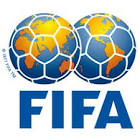

|  | FIFA |
| Ethnic | Global |
| Job | Global Football Agency |
| Desc | xxxx |
Affiliation
| Location | City of Zurich |
2015 12 01 Retrieve
[Fifa admits bronze boot error, Chukwueze not Nwakali winner] We made a mistake at the closing ceremony of the FIFA U-17 World Cup Chile 2015 with the distribution of the adidas Bronze Boot. Instead of player no. 8 of Nigeria, Samuel Chukwueze, the player Kelechi Nwakali (player no. 10 of Nigeria) received the adidas Bronze Boot. However, if two or more players are still equal (after goals and assists), the player who has played fewer number of minutes will be ranked first. With this in mind, adidas will send you another Bronze Boot in December 2015, which we would kindly ask you to hand over to Samuel Chukwueze. Please be informed that Kelechi Nwakali may keep his trophy
2017 01 16 Retrieve
[Joel Matip could miss five more Liverpool games as a result of Cameroon dispute] We can confirm that Liverpool FC contacted FIFA about the matter and our services answered by directing the club to the applicable provisions.
A player who has been called up by his association for one of its representative teams is, unless otherwise agreed by the relevant association, not entitled to play for the club with which he is registered during the period for which he has been released or should have been released pursuant to the provisions of this annexe, plus an additional period of five days
2017 01 27 Retrieve
[Winners of the legendary Intercontinental Cup tournament will no longer be considered world champions] FIFA has recognised and valued the initiatives of establishing world club competitions across history. That is the situation of tournaments that included European and South American clubs, such as the Copa Rio of 1951 and 1952; and the Intercontinental Cup. Nevertheless, not until 2000 did FIFA first organise the Club World Cup, with representatives from all six confederations. The winners of those competitions are the teams who are officially considered by FIFA as world club champions
2017 03 05 Retrieve
[Are we waiting for a player to be killed? Why FIFA has got to ban heading. Luke Giggs said] Fernando Torres’s injury is another reminder of the possible serious implications that can result from a clash of heads, which can occur in any game of football or indeed any contact sport. This incident, as well as the recent head injury involving Ryan Mason, demonstrates there is more understanding and recognition in football of the importance of ensuring all head injuries are treated with the utmost seriousness, and this has to be welcomed. However, there is still room for improvement in all sports, not just football, to ensure that the safety first principle of ‘if in doubt, sit it out!’ is applied in all cases of suspected concussion.
2017 03 20 Retrieve
[Ghanaian referee Joseph Odartei Lamptey has been slapped with a lifetime ban by FIFA due to match manipulation] The FIFA disciplinary committee has decided to ban the Ghanaian match official Joseph Odartei Lamptey from taking part in any kind of football-related activity [administrative, sports or any other] at national and international level for life. The official was found guilty of breaching art. 69 par. 1 [unlawfully influencing match results] of the Fifa disciplinary code during the 2018 FIFA World Cup Russia qualifying match between South Africa and Senegal on 12 November 2016.
2017 03 20b Retrieve
[Assistant referee David Lionheart Nii Lartey Laryea, who was running the touchline when Joseph Odartei Lamptey made the ‘unthinkable call’ has been pardoned after investigations proved him innocent] On the other hand, all charges against the Ghanaian match official David Laryea, whose behaviour had also been the subject of investigations, were dismissed by the FIFA disciplinary committee. Further information concerning the South Africa vs Senegal match in question will be provided once the decision becomes final and binding.
2017 03 24 Retrieve
[FIFA U-17 World Cup 2017 - Kochi slammed on inspection for lack of preparedness] I don’t want to go into specifics but when it comes to the general state, a lot is unfinished. All the areas have concerns. The media box, the fire system, the seats - lot remains to be done. The completion of the work that we requested in our last visit has not been done. There is a lot of concern so we set up a new deadline of 15th May. We really haven’t completed any of the work.
As we said from the beginning we really need to close the stores as we cannot allow entry of unauthorized people during the matches. We cannot control the security if people come to these stores. We cannot accept the situation and still we have no solution. We really need to close that especially the stores which have fuel tanks which can lead to a grave security concern
2017 03 25 Retrieve
[FIFA Head of Tournaments, Jaime Yarza, was effusive in his praise of the DY Patil Stadium in Navi Mumbai after completing an inspection] I said last year I was very happy with the stadium. I haven’t changed my mind. It’s a fantastic stadium. Most of the work that we have asked is completed. The rest is of temporary nature so we have no worries. The new dressing rooms are of a very high quality so we are very happy. The pitch will be prepared now that the cricket season is over. This will be one of the best, if not the best stadium in the country for hosting the World Cup matches
Even though this is a boys tournament, I want girls to come out in large numbers, to see what football can do to their lives. We also want families to come to the tournament. And we will be doing everything to make this possible
[With the DY Patil set to host a Justin Bieber concert in May, Yarza did not see it as a negative and hailed it as an important test run] One of the things we like to do in World Cup venues is to have test events. We will have 50,000 people there but the planning of laying grass is only after that. So it is a good opportunity. Timing wise it’s a good thing to see how facilities work. If this was one month before the tournament, then that would be a problem
2017 03 25b Retrieve
[Tournament Director Javier Ceppi chimed in saying that the DY Patil Stadium would serve as the benchmark for all the stadiums across the country] This is the best stadium in the country at the present moment. We need to make sure if every other stadium is as good as this stadium. This is the standard. Even after having this standard, they still want to do better. That is commendable.
The two grounds in the stadium premises are fantastic. They are here, so that is an ideal scenario with floodlights all ready. The other two are away from the stadium and there is work going on for the other two but we are confident of finishing it well on time
2017 03 26 Retrieve
[Guwahati meets with FIFA’s approval] The State Government is wonderful and their eagerness to be a great venue for the first FIFA tournament in the country is worth lauding. We know how passionate the supporters are in this part of the country and hence, we’re very happy to see the developments and preparations here in Guwahati. We want to give the fans all over north-east India, just like at other venues, a great World Cup.
There are minor issues to sort out - like the development of a new hotel for teams but I believe we are well on schedule for the tournament
2017 03 26b Retrieve
[Guwahati meets with FIFA’s approval] The State Government of Assam has really taken the leadership when it comes to making the World Cup a huge effort in their State. We are already working on all operational and promotional matters to make sure that all the people of Assam and of the neighbouring north-eastern states can enjoy World Cup matches in the north-east.
The development in the stadium is very satisfactory and we are sure that the FIFA U-17 World Cup will do justice to the vision of Hon. CM Sarbananda Sonowal of making Guwahati the sports capital of India
2017 03 27 Retrieve
[Kolkata, often known as the cradle of Indian football, will hold the final of the 2017 FIFA U-17 World Cup later this year. Javier Ceppi said] It is a happy day for me because all the questions about the match schedule will stop being asked. We can finally focus on other things. It has been an extremely complicated process to finalise the schedule to have a World Cup in India - different festivities, weather patterns, different timelines.
We know that October is a month of festivities and we want this to be a festival of football
Football takes over. This is the first time that India is hosting a FIFA tournament. It will be also the first time an Indian team will play in a FIFA competition. In recognition of the increasing excitement about the beautiful game in India, ‘Football Takes Over’ was the first and most fitting choice as the Official Slogan for the tournament
2017 04 06 Retrieve
[Annual External Compliance report of SC’s Workers’ Welfare Standards published. SC Secretary General, H.E. Hassan Al Thawadi was buoyed by the results of the auditor and stated on the same] We have always believed that the 2022 FIFA World Cup will be a catalyst to accelerate positive initiatives already being undertaken in Qatar, leaving a legacy of enhanced, sustainable and meaningful progress around workers’ welfare. While the findings clearly state there are challenges, they also demonstrate our continued commitment to this process.
We will do everything necessary to ensure the issues identified are dealt with promptly. We respect the diligence shown by Impactt during their audits and the constructive observations and recommendations made
- 2017 04 07
- Qatari football official Saoud Al-Mohannadi on Thursday won his appeal over a one-year ban handed to him by an independent ethics committee for refusing to help in an investigation
2017 04 25 Retrieve
[Meet Lucas Cardoso - The 72-year-old who will be volunteering come October] I started following football from the 1966 FIFA World Cup. I was a Portugal fan, and it was the first time Portugal had qualified. They finished third but I still remember the semi-final against England very clearly. They had changed the venue [from Goodison Park to Wembley to incorporate higher gate receipts] at the last moment, and that really helped the hosts.
Portugal ended up losing 2-1. But it got me interested in football and I have been following every World Cup since. In India, I have been a Salgaocar fan for a long time. Back then, they used to have a policy of fielding only local Goan talent. Dempo SC or Churchill Brothers used to bring in players from other states and other countries as well, but Salgaocar would play our Goan youngsters. That way I could really relate to them because I wanted to see Goa develop as a footballing state and more Goan youngsters get to play regularly
Let me put it this way, Salgaocar and the other clubs used to promote Goan talent but they then shifted their focus from it. But in FC Goa, the whole of Goa sees a united representation on a national level. Along with the players from other countries, we are able to see Goan players like Romeo Fernandes and Mandar Rao Dessai given chances at the highest level. That’s why you see most of Goa readily supporting them
Yes, Goa might not have any players in the U-17 team, but the fact remains that football is our first sport and it is as much as a part of the Goan culture than anything else. We are happy that at least Goan youngsters are getting the chance to improve with the rest of the country thanks to this tournament, so we will definitely support it,
My first experience with volunteering came three years back during the Lusofonia Games held in Goa. I’m fluent in Portuguese, so I went and offered my services. Initially they were apprehensive, saying that I was too old for that! I told them that I won’t be able to do any running around or such ground work, but with my experience, I could handle logistics. So they gave me some logistics related work. Later, as the Games drew closer, I was appointed as the Official Liason Officer and translator of the Portuguese contingent
2017 05 05 Retrieve
[Messi’s four-game Argentina ban and fine rescinded after FIFA appeal] The FIFA Appeal Committee has upheld the appeal lodged by the Argentinian Football Association, on behalf of the player Lionel Messi, against the decision taken by the FIFA Disciplinary Committee, lifting the sanctions imposed on him as a result.
Following a hearing which took place in Zurich on 4 May 2017, the Appeal Committee has set aside the decision taken by the FIFA Disciplinary Committee on March 28 2017, which, in application of art. 77 a]</b> of the FIFA Disciplinary Code [FDC], had found Lionel Messi guilty of infringing art. 57 of the FDC for having directed insulting words at an assistant referee
Despite the fact that the FIFA Appeal Committee considered Lionel Messi’s behaviour as reproachable, the former concluded that the evidence available was not sufficient to establish to the appropriate standard, i.e. to the comfortable satisfaction of the members of the Appeal Committee, that art. 77 a]</b> of the FDC, according to which the Disciplinary Committee is responsible for sanctioning serious infringements which have escaped the match officials’ attention, could be applied
The Appeal Committee nevertheless underlines the importance of always showing respect to the match officials, stressing that such a principle is essential in football and any unsporting conduct that may be contrary to the principles of fair play cannot be accepted. In view of the above decision, the suspension for four matches imposed on Lionel Messi, which entered into force on March 28 2017, and the fine of £7,800 have been lifted
2017 05 08 Retrieve
[A group of Italian agents is seeking to overturn FIFA’s deregulation of their profession and they could be set to bring in new regulations to the transfer market ahead of an upcoming summer of business] The proposed new regulations would benefit not only football agents, but also football clubs and players as they would reduce criminal activity in the transfer market.
2017 05 22 Retrieve
[Pay Television company StarTimes to broadcast live all U-20 matches] All U-20 World Cup will be broadcasted live on StarTimes’ 5 sports channels, including two High Definition channels namely Sports Premium and World Premium.
2017 06 13 Retrieve
[The UAE FA have announced that FIFA had accepted their request to change the Qatari refereeing team] FIFA have agreed to change the Qatari refereeing team with Singapore/Malay team for the Thailand match
2017 07 07 Retrieve
[Former France midfielder Florent Malouda is not eligible to play with French Guiana in the CONCACAF Gold Cup] In 2017, 10 years later, the rules are in place. The player eligibility rules are those of FIFA, meaning that a player who is cap-tied to another national team isn’t going to be able to play at the Gold Cup for another team in CONCACAF.
2017 08 03 Retrieve
[FIFA could be forced to wade in should La Liga continue to drag its heels and refuse to acknowledge the Neymar’s payment] In order for an international transfer to take place, an International Transfer Certificate [ITC] is required. This is issued from the player’s former association to his new one.
For an international transfer to take place an ITC is necessary and the various steps need to be taken to get the ITC. Once this has been completed the former association of the player, asks the player and his former club to confirm if his contract has expired, if it was ended early or on mutual agreement or whether there is a contractual dispute.
The ITC can be rejected if the contract between the player and his former club has not expired, or if there is no mutual agreement regarding its early termination. Generally speaking FIFA doesn’t speculate on potential scenarios and their outcomes so in this respect we refer to the regulations
2018 01 23 Retrieve
[What is the FIFA World Cup Trophy Tour by Coca-Cola and where is it going?] Following the success of the first phase of the FIFA World Cup Trophy Tour, which gave more than 220,000 people across Russia the chance to see the FIFA World Cup Trophy with their own eyes, we are very excited to now offer this unforgettable opportunity to football fans around the world.
2018 02 17 Retrieve
[What are the FIFA eligibility rules for national teams?] [Article 5.1] Any person holding a permanent nationality that is not dependent on residence in a certain country is eligible to play for the representative teams of the association of that country.
[Article 5.2] …any player who has already participated in a match [either in full or in part] in an official competition of any category or any type of football for one association may not play an international match for a representative team of another association
[Article 6.2] …associations sharing a common nationality may make an agreement under which item [d] of par. 1 of this article is deleted completely or amended to specify a longer time limit. Such agreements shall be lodged with and approved by the Council.
2018 04 03 Retrieve
[FIFA rule threatening to dash Zlatan Ibrahimovic’s 2018 World Cup dream] Persons bound by this code shall be forbidden from taking part in, either directly or indirectly, or otherwise being associated with, betting, gambling, lotteries and similar events or transactions connected with football matches. They are forbidden from having stakes, either actively or passively, in companies, concerns, organisations, etc. that promote, broker, arrange or conduct such events on transactions.
2018 06 02 Retrieve
[FIFA made it clear that Morocco would have to spend billions to improve stadiums and infrastructure before the country would be able to actually host a World Cup] The amount of new infrastructure required for the Morocco 2026 bid to become reality cannot be overstated.
2018 10 22 Retrieve
[Liga MX released a statement denying it is under any sort of investigation of match manipulation] FIFA can confirm that it is currently not conducting any investigation into match manipulation in Mexican football. Accordingly, recent comments circulating in Mexican media related to an apparent ongoing investigation conducted by FIFA into possible match manipulation in Mexican football are not only incorrect but also highly misleading
2018 11 14 Retrieve
[FIFA have insisted no decision has been reached on a possible Chelsea transfer ban] As communicated in September 2017, investigations were opened concerning the club Chelsea FC as well as other English clubs in relation to potential breaches of the Regulations on the Status and Transfer of Players. The proceedings are ongoing and, to date, no decision has been passed by the FIFA judicial bodies. Thus, the clubs are to be presumed innocent unless decided otherwise. No further information can be provided as the cases are ongoing. Any update will be communicated in due course.
2018 11 17 Retrieve
[Manchester City have spent an initial £375,000 on Millwall 14-year-old Darko Gyabi] As communicated in September 2017, investigations were opened concerning the club Chelsea FC as well as other English clubs in relation to potential breaches of the Regulations on the Status and Transfer of Players. The proceedings are ongoing and, to date, no decision has been passed by the FIFA judicial bodies. Thus, the clubs are to be presumed innocent unless decided otherwise. No further information can be provided as the cases are ongoing. Any update will be communicated in due course
2019 02 22 Retrieve
[FIFA has banned Chelsea from signing new players in the next two transfer windows] The FIFA Disciplinary Committee has sanctioned the English club Chelsea FC and The Football Association for breaches relating to the international transfer and registration of players under the age of 18.
Chelsea was found to have breached art. 19 of the Regulations in the case of twenty-nine (29) minor players and to have committed several other infringements relating to registration requirements for players. The club also breached art. 18bis of the Regulations in connection with two agreements it concluded concerning minors and which allowed it to influence other clubs in transfer-related matters.
The Disciplinary Committee sanctioned Chelsea with a ban on registering new players at both national and international level for the next two (2) complete and consecutive registration periods. This ban applies to the club as a whole - with the exception of the women’s and futsal teams - and does not prevent the release of players.
Additionally, the club was fined CHF 600,000 and given a period of 90 days to regularise the situation of the minor players concerned
The Football Association was also found to have breached the rules in connection with minors. It was fined CHF 510,000 and given a period of six months to address the situation concerning the international transfer and first registration of minors in football. The protection of minors is a key element in FIFA’s overall regulatory framework relating to the transfer of players and effective enforcement of these rules is paramount, as also confirmed on various occasions by the Court of Arbitration for Sport. The decisions issued by the Disciplinary Committee were notified today and can be contested before the FIFA Appeal Committee
2019 02 23 Retrieve
[Peru stripped of FIFA Under 17 Wold Cup hosting rights] Following various inspection visits by FIFA and further meetings with the Peruvian Football Association (FPF), and in view of a number of organisational and infrastructure challenges linked to the event delivery, the Bureau of the FIFA Council has decided that the FIFA U-17 World Cup 2019 will no longer be staged in Peru. FIFA would like to express its thanks to the FPF and the Peruvian authorities for their efforts, and remains open to organising a competition in Peru in the future. FIFA is currently evaluating different alternatives concerning the appointment of a new host country. Further information will be provided by FIFA in due course.
2019 02 27 Retrieve
[Nantes complain to FIFA as Cardiff miss first Emiliano Sala payment] We can confirm that we have received yesterday evening a claim from FC Nantes against Cardiff City in connection with the transfer of Emiliano Sala. We are looking into the matter and consequently we have no further comments at this stage
2019 03 02 Retrieve
[FIFA rules Ezra Walian ineligible to represent Indonesia at any level] Consequently, on the basis of the documents currently on file, it seems the player Ezra Walian would not be entitled to request a change of Association due to the fact that he appears to have acquired the Indonesian nationality only after having played his first international match in an official competition for one of the representative teams of the Netherlands
2019 03 05 Retrieve
[Chelsea have lodged an appeal with FIFA against their ban from signing players during the next two transfer windows] Any decision on the sanction remaining in place during the appeal process is to be taken by the chairman of the FIFA Appeal Committee.
The FIFA Disciplinary Committee has sanctioned the English club Chelsea FC and The Football Association for breaches relating to the international transfer and registration of players under the age of 18. Chelsea was found to have breached art. 19 of the Regulations in the case of twenty-nine (29) minor players and to have committed several other infringements relating to registration requirements for players. The club also breached art. 18bis of the Regulations in connection with two agreements it concluded concerning minors and which allowed it to influence other clubs in transfer-related matters. The Disciplinary Committee sanctioned Chelsea with a ban on registering new players at both national and international level for the next two (2) complete and consecutive registration periods. This ban applies to the club as a whole - with the exception of the women’s and futsal teams - and does not prevent the release of players. Additionally, the club was fined CHF 600,000 and given a period of 90 days to regularise the situation of the minor players concerned
2019 03 15 Retrieve
[Qatar 2022 organisers ‘open’ to FIFA’s plan to expand World Cup to 48 teams] We have been open to the process of discussing a potential expansion of the World Cup in 2022 to 48 teams since discussions started in Moscow and continued in Kigali. Our openness was based on our commitment to hosting a FIFA World Cup that benefits our region and its people in the best way possible. It has always been our mission to ensure that this World Cup belongs to the entire Arab World and the Middle East. We will work with FIFA to determine whether or not a viable operating model does exist and importantly, whether it is in the best interests for football and for the tournament, and for Qatar as the host nation. After these consultations, the final decision will be made by Qatar and FIFA. Until we reach that conclusion, we will continue to work toward hosting a 32-team World Cup in 2022 hosted in the state of Qatar.
2019 04 03 Retrieve
[American soccer does not have promotion and relegation] A club’s entitlement to take part in a domestic league championship shall depend principally on sporting merit. A club shall qualify for a domestic league championship by remaining in a certain division or by being promoted or relegated to another at the end of a season
2019 04 04 Retrieve
[FIFA’s new Club World Cup] The world will see a real Club World Cup where the best teams in the world will compete for the crown of world champion. This is important because, of course, club football is evolving. It’s moving at difference paces in different parts of the world and it is our duty and responsibility to make sure that we encourage professional club football all over the world. We want to have an exciting competition, we want to have a prestigious competition, we want to have an inclusive competition and we will have this starting in 2021.
2019 04 17 Retrieve
[What is football’s concussion protocol?] The current evidence for a correlation between heading frequency and neurocognitive deficits is weak and probably biased by inaccurate reports of heading frequency.
Despite the claims of many manufacturers, mouthguards and headgear do not prevent concussion. Mouthguards have, however, been shown to significantly reduce the risk of dental injuries and facial and skull fractures
2019 04 19 Retrieve
[What is the #Enough campaign? PFA’s anti-racism movement explained] We support the initiative of the @PFA - FIFA is fully engaged in combating racism and discrimination, as clearly expressed by our President last week). FIFA is also preparing a concrete action with worldwide impact that will launch a strong campaign against discrimination
2019 05 08 Retrieve
[Chelsea facing two-window transfer ban after losing FIFA appeal] With respect to all men’s teams, the ban on registering new players, both nationally and internationally for two registration periods, has been confirmed by the FIFA Appeal Committee, with the following exception: The FIFA Appeal Committee believes that Chelsea’s wrongdoing consisted in not respecting the prohibition from internationally transferring or registering for the first time foreign minor players. In the committee´s opinion, imposing a ban on registering each and every minor would not be proportionate to the offence committed. Consequently, the FIFA Appeal Committee decided that, as far as youth categories are concerned, the ban shall not cover the registration of minor players under the age of 16 who do not fall under the scope of art. 19 of the Regulations on the Status and Transfer of Players, which refers to international transfers and first registrations of foreign minor players.
2019 05 22 Retrieve
[FIFA scrap plans for 48-team World Cup at Qatar 2022] In line with the conclusions of the feasibility study approved by the FIFA Council at its last meeting, FIFA and Qatar have jointly explored all possibilities to increase the number of participant teams from 32 to 48 teams by involving neighbouring countries at the FIFA World Cup Qatar 2022.
Following a thorough and comprehensive consultation process with the involvement of all the relevant stakeholders, it was concluded that under the current circumstances such a proposal could not be made now. Additionally, FIFA and Qatar have once again explored the feasibility of Qatar hosting a 48-team tournament by in particular lowering certain key FIFA requirements.
A joint analysis, in this respect, concluded that due to the advanced stage of preparations and the need for a detailed assessment of the potential logistical impact on the host country, more time would be required and a decision could not be taken before the deadline of June. It was therefore decided not to further pursue this option. The FIFA World Cup Qatar 2022 will therefore remain as originally planned with 32 teams and no proposal will be submitted at the next FIFA Congress on 5 June
- 2019 05 29
- UEFA has asked FIFA and the International Football Association Board (IFAB) to review regulations regarding concussion. Napoli goalkeeper David Ospina was also taken to hospital after a Serie A game against Udinese in March when he collapsed having attempted to play on after sustaining a head injury
2019 06 07 Retrieve
[Chelsea face summer without signings despite CAS appeal] The Court of Arbitration for Sport (CAS) has registered an appeal filed by Chelsea Football Club Ltd (CFC) against the Fédération Internationale de Football Association (FIFA).
The appeal is directed against the FIFA Appeal Committee decision dated 11 April 2019 in which CFC was declared liable for violations of the FIFA Regulations on the Status and Transfer of Players and banned from registering new players, nationally and internationally, for two entire and consecutive registration periods, fined CHF 600,000, issued with a reprimand and warned on its future conduct.
Generally speaking, CAS appeal arbitration procedures involve an exchange of written submissions between the parties while a Panel of CAS arbitrators is being convened to hear the appeal. Once the panel has been formally constituted it issues procedural directions, including, inter alia, with respect to the holding of a hearing. Following the hearing, if one is held (a CAS panel may also issue a decision based only on the parties’ written submissions), the panel deliberates and then issues its decision in the form of an Arbitral Award. It is not possible to say at this time when the Arbitral Award will be issued
- 2019 06 07b
- Why FIFA sanctioned Chelsea & what is the appeal process? According to FIFA, the ban is being imposed on Chelsea because the governing body found the club to be in breach of regulations relating to the international transfer and registration of players under the age of 18
- 2019 06 07c
- FIFA sanctioned Chelsea. Can Chelsea appeal the transfer ban? Chelsea FC categorically refutes the findings of the FIFA Disciplinary Committee and will therefore be appealing the decision. The club wishes to emphasise that it respects the important work undertaken by FIFA in relation to the protection of minors and has fully cooperated with FIFA throughout its investigation.
- 2019 06 07d
- How long will the Chelsea transfer ban last? Chelsea Football Club is astonished by the FIFA Appeal Committee’s decision not to suspend its sanction pending completion of the appeal process.
So far as the Club is aware, in all previous cases where a registration ban has been imposed by FIFA, a decision has also been made to suspend the sanction until the appeal process has been completed. In this case, Chelsea considers that it is being treated inconsistently in comparison with other European clubs - 2019 06 17
- Inside the FIFA World Football Museum presented by Hyundai, there is a quote from pioneering women’s footballer Nettie Honeyball. We only play under association rules … and we play for the sake of pure sport only. Honeyball said these words in 1895
2019 06 18 Retrieve
[FIFA indicated that it would support the investigation into Qatar’s successful World Cup bid, while declining to comment on the specifics of Michel Platini’s case] FIFA is aware of today’s press reports concerning Mr. Michel Platini. Please understand that since we don’t have all the details about the matter, we are not in a position to comment further. Generally speaking, FIFA reiterates its full commitment to cooperating with the authorities in any given country of the world where investigations are taking place in connection with football activities
- 2019 07 01
- Jadon Sancho, Phil Foden and Vinicius Junior star in the NxGn FIFA Ultimate Team Squad Battle
2019 07 02 Retrieve
[Did Chelsea appeal the transfer ban?] Chelsea FC categorically refutes the findings of the FIFA Disciplinary Committee and will therefore be appealing the decision. The club wishes to emphasise that it respects the important work undertaken by FIFA in relation to the protection of minors and has fully cooperated with FIFA throughout its investigation.
- 2019 07 05
- Currently serving a six-year ban from football following a corruption scandal in 2015, former FIFA president Sepp Blatter has started a fresh legal battle with football’s governing body
2019 07 05b Retrieve
[Among the items alleged to have been taken, Blatter is particularly desperate to see around 60 watches of his returned. In response to Blatter’s claims, FIFA were quick to point out the man’s history] Mr Blatter is of course entitled to his opinions but, at the same time, it’s probably worthwhile remembering that these opinions and allegations come from a person who was banned from football for six years for engaging in unethical behaviour. In the meantime, we also understand that the Swiss authorities continue to investigate him for possible criminal misconduct and the new FIFA hopes these investigations come to a conclusion soon. Mr Blatter’s views and opinions should be seen in that context, and against the background of his own conduct in office over a period of decades
- 2019 07 05c
- Gianni Infantino says FIFA is considering expanding the next Women’s World Cup to 32 teams and doubling the prize money
2019 08 13 Retrieve
[Man City avoid transfer ban for breaching FIFA regulations around signing minors - fined £315,000 instead] The FIFA Disciplinary Committee has sanctioned English club Manchester City FC for breaches relating to the international transfer and registration of players under the age of 18. Manchester City FC was found to have breached, amongst others, article 19 of the FIFA Regulations on the Status and Transfer of Players. The Disciplinary Committee took into account the fact that Manchester City FC accepted its responsibility and sanctioned the club with a fine of CHF 370,000. The protection of minors is a key element in FIFA’s overall regulatory framework relating to the transfer of players, and the effective enforcement of these rules is paramount, as has also been confirmed on various occasions by the Court of Arbitration for Sport. The decision issued by the Disciplinary Committee was notified today
2019 08 16 Retrieve
[FIFA has banned former Nigeria coach Samson Siasia from all football activity for life after being found guilty of accepting an offer to receive bribes in order to manipulate matches] Samson Siasia having been found guilty of having accepted that he would receive bribes in relation to the manipulation of matches in violation of the Fifa Code of Ethics
2019 09 03 Retrieve
[World Cup 2022 emblem revealed as Qatar vows to connect the entire world] The swooping curves of the emblem represent the undulations of desert dunes and the unbroken loop depicts both the number eight - a reminder of the eight astonishing stadiums that will host matches - and the infinity symbol, reflecting the interconnected nature of the events
2019 09 26 Retrieve
[FIFA moved to clarify why those particular votes for Salah were not counted in a statement released on Thursday] During the monitoring of the votes submitted by the Egyptian Football Association (EFA) on August 15, it was remarked that the signatures on the voting forms were in capital letters and thus seemed not valid (not authentic). The voting forms were also not signed by the general secretary which is mandatory
[Nicaragua captain Juan Barrera claimed on Twitter he did not vote although his name is listed on FIFA’s official document, which says he chose Lionel Messi, Sadio Mane and Cristiano Ronaldo as his top three] We have checked the voting documents submitted by the Nicaraguan FA and all documents are signed and confirmed with the official stamp of the Nicaraguan FA. Having compared with the vote sheets submitted by the federation and the ones we have published on FIFA.com… we confirm that we have the right votes signed by the player. We are asking the Nicaraguan Football Federations to inquire on this matter
2019 09 27 Retrieve
[FIFA disappointed by ‘unfair and misleading’ reports over voting for The Best awards] FIFA has been disappointed to see a number of reports in the media questioning the integrity of the voting process for The Best FIFA Football Awards. These reports are unfair and misleading. The voting procedure for each of the awards is supervised and monitored by an independent observer, in this case PricewaterhouseCoopers (PwC) Switzerland. FIFA and PwC follow the Rules of Allocation and relevant standard control procedures. As per these procedures, FIFA requested all member associations to submit their voting forms both electronically and in writing.
The written documents must also be signed by the responsible persons of the association as well as by the persons authorised to vote. Therefore in order for a vote to be valid it must include the respective signatures and the member association’s stamp. Both FIFA and the independent observer can demonstrate that all the votes submitted in accordance with the rules and within the deadlines were taken into account. Consequently, there is no doubt whatsoever as to the authenticity of the result. Should there have been any case of wrong-doing, and even if this did not affect the result of the vote, FIFA will investigate and apply sanctions where necessary
2019 09 30 Retrieve
[Cardiff City have been told by the FIFA Players’ Status Committee to pay Nantes €6 million for the late Emiliano Sala] In a meeting held on 25 September 2019, the FIFA Players’ Status Committee established that Cardiff City FC must pay FC Nantes the sum of EUR 6,000,000, corresponding to the first instalment due in accordance with the transfer agreement concluded between the parties on 19 January 2019 for the transfer of the late Emiliano Sala from FC Nantes to Cardiff City FC.
The FIFA Players’ Status Committee, which never lost sight of the specific and unique circumstances of this tragic situation during its deliberations on the dispute at stake, refrained from imposing procedural costs on the parties.
The findings of the decision were notified to the parties concerned today. Within a deadline of ten days, Cardiff City FC and FC Nantes can request a copy of the grounds of the decision, which can be appealed to the Court of Arbitration for Sport (CAS) in Lausanne
2019 10 06 Retrieve
[Can football clubs stop their players from accepting international call-ups?] Clubs are obliged to release their registered players to the representative teams of the country for which the player is eligible to play on the basis of his nationality if they are called up by the association concerned. Any agreement between a player and a club to the contrary is prohibited
2019 10 24 Retrieve
[FIFA Club World Cup: China unanimously appointed as hosts of revised competition in 2021] FIFA Council unanimously appoints China PR as hosts of new Club World Cup in 2021. The FIFA Council convened today in Shanghai and voted on a number of key steps for the future of international tournaments, including a unanimous decision to appoint China PR as the host of the first edition of the new FIFA Club World Cup in 2021. The tournament will be played between June and July 2021 and the final list of venues will be decided by FIFA and the Chinese FA. The participation model to determine the clubs that qualify from each confederation will be finalised in a consultation process between FIFA and the six confederations
2019 11 04 Retrieve
[Cardiff City have been threatened with a three-window transfer ban by FIFA if they fail to pay the first instalment of the fee owed to Nantes for the late Emiliano Sala] A ban from registering any new players, either nationally or internationally, for the maximum duration of three entire and consecutive registration periods shall become effective
2019 11 29 Retrieve
[Former Brazilian Football Confederation (CBF) president Ricardo Teixeira has been banned from football for life and fined one million Swiss francs by FIFA] In its decision, the adjudicatory chamber found that Mr Teixeira had breached art. 27 (bribery) of the FIFA code of ethics (2018 edition) and, as a result, sanctioned him with a ban for life on taking part in any football-related activity (administrative, sports or any other) at both national and international level. Additionally, a fine in the amount of 1m CHF has been imposed on Mr Ricardo Teixeira.
2019 12 07 Retrieve
[Liverpool’s two Club World Cup matches have been moved from Al Rayyan to Doha after FIFA was forced to switch the venue for the final] Construction at Education City Stadium is complete and the venue is now operational. However, the necessary certification process took longer than expected and therefore the stadium was unable to host the required test events prior to the semi-final and final of the FIFA Club World Cup at full capacity. The priority is to ensure an enjoyable experience for all fans so it was decided to open the stadium at a later date
2019 12 23 Retrieve
[Can Liverpool wear Club World Cup champions badge in the Premier League?] As per the usage guidelines, the winning team can wear the FIFA World Champions Badge from the day it becomes champions up to and including the final of the next edition of the tournament. The badge may only be used on the current official team playing shirts. That means that the FIFA World Champions Badge may not be used on previous [or] historical versions of the team shirts, training jerseys, tracksuits, training tops or any other products
2020 01 22 Retrieve
[FIFA decried the current system and proposing to cap agents’ fees] FIFA, as football’s governing body, has the responsibility to address and regulate these matters. We are aiming for a system of balanced and reasonable regulation, instead of the law of the jungle currently in place, with conflicts of interests rife and exorbitant ‘commissions’ being earned left and right. In the last year alone, football agents earned $653.9 million in fees, four times more than in 2015
2020 03 06 Retrieve
[FIFA Committee recommends ban on overseas league games] With regard to matches and competitions with an international dimension, the committee endorsed the principle set out by the FIFA council that official domestic matches should take place on the territory of the member association concerned. Regulations on this matter will be submitted to the FIFA council
2020 03 13 Retrieve
[FIFA give clubs permission to decline international call-ups] In light of the current situation concerning the Coronavirus, the Bureau of the FIFA Council has decided that the general football rules which normally oblige clubs to release players for national team matches will not apply for the up-coming international windows in March/April
The situation is rapidly evolving across the world and various international travel restrictions have already been imposed by different public authorities.
FIFA understands that to hold the matches under current circumstances might not only present potential health risks to players (and to the general public) but would also, most likely, compromise the sporting integrity of such matches insofar as certain teams may be deprived of their best squads whilst others may not
To avoid any unnecessary health risks and also situations of potential sporting unfairness, we therefore recommend that all international matches previously scheduled to take place in March and April should now be postponed until such time that they can take place in a safe and secure environment, both for players and for the general public. The final decision on this issue rests with the respective competition organisers or relevant member association in case of friendlies
The qualifying matches for the FIFA World Cup in both Asia and South America have already been postponed following consultation between FIFA and the Confederations concerned.
In consultation with the confederations and relevant stakeholders, FIFA will be studying the possibilities for re-scheduling any postponed matches and is confident that with goodwill and flexibility from all sides, appropriate solutions will be found to allow the matches to take place in due course and with minimal disruption.
We are working in close cooperation with relevant national and international public health authorities (most notably the World Health Organisation) and, taking into account the expert advice that we have received on the matter, we consider this measure and recommendation to be the most appropriate and responsible step to take under the current circumstances
2020 03 24 Retrieve
[FIFA President Gianni Infantino on coronavirus quarantine] We need teamwork to combat the coronavirus. FIFA has teamed up with WHO because health comes first. I call upon the football community worldwide to join us in supporting this campaign to pass the message even further. Some of the greatest players to have played the beautiful game have put their names to the campaign and are united in their desire to pass the message to kick out Covid-19
2020 03 26 Retrieve
[France’s Euro 1984-winning coach Michel Hidalgo dies aged 87] France has lost one of its greatest figures. Michel Hidalgo was the brains behind the exhilarating side that reached the World Cup semi-finals in 1982 and won Euro 1984. RIP and ‘merci’ for the memories, Michel
2020 04 03 Retrieve
[FIFA Covid-19 working group proposes June international window postponements] FIFA would like to thank the positive contributions and cooperation of all Confederations’ representatives and highlight the spirit of unity, solidarity and mutual understanding which culminated in the adoption of these decisions. FIFA also reiterates that health must always be the first priority and the main criteria in any decision-making process, especially in these challenging times
2020 04 06 Retrieve
[U.S. Dept. of Justice indictment claims Bribes used to secure FIFA 2018 & 2022 World Cup rights] The profiteering and bribery in international soccer have been deep-seated and commonly known practices for decades. Over a period of many years, the defendants and their co-conspirators corrupted the governance and business of international soccer with bribes and kickbacks, and engaged in criminal fraudulent schemes that caused significant harm to the sport of soccer. Their schemes included the use of shell companies, sham consulting contracts and other concealment methods to disguise the bribes and kickback payments and make them appear legitimate.
2020 04 07 Retrieve
[FIFA ‘closely following’ latest corruption allegations] Fifa supports all investigations into alleged acts of criminal wrongdoing regarding either domestic or international football competitions, and will continue to provide full co-operation to law enforcement officials investigating such matters
Fifa is closely following these investigations and all related developments in the legal processes ongoing in the United States and other parts of the world. It is important to point out that Fifa has itself been accorded victim status in the US criminal proceedings and senior Fifa officials are in regular contact with the US Department of Justice. Following the latest indictment, Fifa will ask the DOJ for further information on these matters
The Fifa ethics committee has already imposed sanctions, including life bans, on football officials mentioned in this process. So far as Fifa is concerned, should any acts of criminal wrongdoing by football officials be established, the individuals in question should be subject to penal sanctions. As the respective criminal cases are ongoing we are not in a position to comment further for the time being
2020 04 07b Retrieve
[FIFA propose extending expiring contracts and ‘flexible’ transfer windows as result of coronavirus] Expiring player contracts usually end when the season ends, with a termination date that coincides with the end of the season. With the current suspension of play in most countries, it is now obvious that the current season will not end when people thought it would. Therefore, it is proposed that contracts be extended until such time that the season does actually end. This should be in line with the original intention of the parties when the contract was signed and should also preserve sporting integrity and stability
Again, it is necessary to adjust the normal regulatory position to the new factual circumstances. Accordingly, FIFA will be flexible and will allow the relevant transfer windows to be moved so they fall between the end of the old season and the start of the new season. At the same time, FIFA will try to ensure, where possible, an overall level of coordination and will also bear in mind the need to protect the regularity, integrity and proper functioning of competitions, so that the sporting results of any competition are not unfairly disrupted
2020 04 07c Retrieve
[Qatari officials have also strongly denied any wrongdoing in their process to win hosting rights to the 2022 World Cup] Qatar’s Supreme Committee for Delivery and Legacy (SC) strongly denies the allegations contained within the court papers made public in the US on April 6 2020. They are part of a long-standing case, the subject of which is not the 2018/2022 FIFA World Cup bidding process.
Despite years of false claims, evidence has never been produced to demonstrate that Qatar won the rights to host the FIFA World Cup 2022 unethically or by means that contravened FIFA’s strict bidding rules
The SC maintains that it strictly adhered to all rules and regulations for the 2018/2022 FIFA World Cup bidding process and any claim to the contrary is baseless and will be fiercely contested
2020 04 08 Retrieve
[The current Covid-19 situation has led to FIFA giving guidance to the various European leagues this week on players with expiring contracts] Contracts be extended until such time that the season does actually end. This should be in line with the original intention of the parties when the contract was signed and should also preserve sporting integrity and stability
2020 04 09 Retrieve
[FIFA have said clubs can extend contracts expiring this summer until a time when the season can be completed] FIFA will be flexible and allow the relevant transfer windows to be moved so they fall between the end of the old season and the start of the new season
2020 04 21 Retrieve
[Coronavirus will not affect $1bn investment in women’s game] This funding has already been committed by Fifa and will not be impacted by the current crisis. This funding will be invested into a range of areas in the women’s game including competitions, capacity building, development programmes, governance and leadership, professionalisation and technical programmes
[Fifa also confirmed that the women’s game would be part of any package to help the sport cope with losses incurred due to coronavirus] Women’s football is being fully considered as part of this process in order to understand the various needs and impact on stakeholders within the women’s game.
Fifa is currently working on possibilities to provide assistance to the football community around the world, including women’s football. The exact format and details of this assistance are currently being discussed in consultation with Fifa’s member associations, the confederations and other stakeholders.
As part of these discussions, Fifa is in close contact with key women’s football stakeholders via the Professional Women’s Football Task Force and the Fifa-Confederations sub-working group on the impacts of Covid-19
2020 04 24 Retrieve
[Former Liverpool defender Dominic Matteo announces recovery from brain tumour] In times littered with awful news we’re absolutely delighted to hear this. You’ve just scored an even more consequential goal than the one that knocked Barcelona out of the Champions League. Good on you and all the healthcare workers!
2020 04 27 Retrieve
[FIFA to propose teams use five substitutes when football resumes after coronavirus outbreak] When competitions resume, such competitions are likely to face a congested match calendar with a higher than normal frequency of matches played in consecutive weeks. Safety of the players is one of FIFA’s main priorities. One concern in this regard is that the frequency of matches may increase the risk of potential injuries due to a player overload. In light of this and the unique challenge faced globally in delivering competitions according to the originally foreseen calendar, FIFA proposes a larger number of substitutions be temporarily allowed at the discretion of the relevant competition organiser. In competitions where less than five substitutions are currently allowed, each team would now be given the possibility to use up to five substitutions, with the possibility of an additional substitution remaining during extra time where relevant
2020 04 29 Retrieve
[When will the Premier League resume?] Safety of the players is one of FIFA’s main priorities. One concern in this regard is that the frequency of matches may increase the risk of potential injuries due to a player overload
2020 05 06 Retrieve
[Bruno Fernandes to Man Utd transfer being investigated by FIFA] We can confirm that on April 3, 2020 the Italian club, Sampdoria, lodged a claim with FIFA against the Portuguese club, Sporting Clube de Portugal, related to financial obligations set out in the contract corresponding to the transfer of the Portuguese player, Bruno Fernandes. The matter is currently being investigated and consequently we cannot provide further comments
2020 05 09 Retrieve
[Sporting CP are currently locked in a battle with Serie A side Sampdoria regarding a supposed 10 per cent sell-on clause] We can confirm that on April 3, 2020 the Italian club, Sampdoria, lodged a claim with FIFA against the Portuguese club, Sporting Clube de Portugal, related to financial obligations set out in the contract corresponding to the transfer of the Portuguese player, Bruno Fernandes. The matter is currently being investigated and consequently we cannot provide further comments
2020 05 15 Retrieve
[FIFA confirms it will select 2023 Women’s World Cup host on June 25] All eligible bids will be presented to the FIFA Council in order for it to select the FIFA Women’s World Cup 2023 host(s) within the scope of an open voting process, in which the result of each ballot and the related votes by the members of the FIFA Council will be made public on FIFA.com
2020 06 10 Retrieve
[Three bids qualify for FIFA Council vote in race to host 2023 Women’s World Cup] Three bids will be submitted to the FIFA Council in order for it to select the FIFA Women’s World Cup 2023 host(s)
2020 06 11 Retrieve
[FIFA has confirmed that it will allow the transfer window to open before the end of the delayed 2019-20 season in order to aid clubs during the coronavirus pandemic] In order to avoid any concerns regarding unemployed players, players are permitted to be registered with a maximum of three clubs and are eligible to play in official matches for three clubs during the same season. In order to give priority to clubs to complete their 2019-20 season with their original squad, provide flexibility, and allow associations to properly plan their football calendar, those associations following a dual-year calendar are permitted to commence the ‘first registration period’ for the 2020-21 season prior to the completion of the 2019-20 season, subject to certain conditions. In order to provide financial relief to parties involved in disputes before FIFA, for any claim lodged between 10 June 2020 and 31 December 2020 (both inclusive), there will be no requirement to pay an advance of costs and no procedural costs shall be ordered. For any claim lodged prior to 10 June 2020 which has yet to be decided, the maximum amount of the procedural costs shall be equivalent to any advance of costs paid
2020 06 15 Retrieve
[FIFA calls for ‘mutual respect and common sense’ in response to Trump tweets] FIFA strongly advocates for tolerance, mutual respect and common sense when such important matters are debated. FIFA has a zero-tolerance approach to incidents of all forms of discrimination in football, as outlined in the FIFA Statutes. We must all say no to racism and no to violence
2020 06 25 Retrieve
[FIFA announces £1.2bn coronavirus relief plan to help football through Covid-19 crisis] Both grants and loans can be directed by member associations to the wider football community in their respective territories, including clubs, players, leagues, or others that have been affected
2020 06 30 Retrieve
[FIFA ban ex-deputy general secretary Markus Kattner from football for 10 years] The adjudicatory chamber of the independent Ethics Committee has found Markus Kattner, former FIFA Deputy Secretary General and Acting Secretary General, guilty of conflicts of interest and having abused his position, in violation of the FIFA Code of Ethics
The investigation into Mr Kattner covered various charges concerning bonus payments in relation to FIFA competitions that were paid to top FIFA management officials (including Mr Kattner), various amendments to and extensions of employment contracts, reimbursement of private legal costs, and Mr Kattner’s duties as an official
In its decision, the adjudicatory chamber ruled that Mr Kattner had breached art. 19 (Conflicts of interest) and art. 25 (Abuse of position) of the FIFA Code of Ethics (2019 edition) and sanctioned him with a ban from all football-related activity (administrative, sports or any other) at both national and international level for a period of ten years. In addition, a fine in the amount of CHF 1,000,000 has been imposed on Mr Kattner
The motivated decision was notified to Mr Kattner today, the date on which the ban comes into force, and has been published on legal.fifa.com.
2020 07 03 Retrieve
[West Ham under investigation by FIFA over Sebastien Haller transfer] We can confirm that we have received a claim from the German club Eintracht Frankfurt against English club West Ham United. The matter is still being investigated and consequently we cannot provide any further comments
2020 07 04 Retrieve
[Arsenal fined by FIFA over player transfer sell-on clauses] The committee considers that, by the mere existence of these clauses, Frosinone and PAOK FC are influenced by Arsenal in employment and transfer-related matters
The committee considers that the relevant clauses undoubtedly grant Arsenal the ability to influence in employment and transfer-related matters the independence, policies and the performance of PAOK FC and Frosinone’s teams